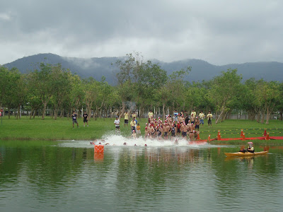

2009 東華盃
比賽的「成績」與「照片」已經上網，請進入「2009 東華盃賽後資訊」網頁。

辦比賽真的是一件很累的事，還好有再立老師提供強力的支援後盾，Dana 一肩扛起所有繁雜的行政工作，還有鐵人隊協力同心地努力，這次活動才能順利進行、完成。雖然很累，但大家一起專心努力地完成一件事，還真有實在感！
東華體育室主任—再立老師今天在開賽前的演講令人印象深刻，至少我是印象深刻的，尤其當老師提到阿甘精神時，對於「純粹運動」的熱血又再次為之沸騰。正好我電腦裡還存有《阿甘正傳》的 VCD 影片檔，我馬上把資料夾打開然後選影片檔再看一遍。當阿甘準備第四次跑步橫越美國時，記者問他：
Why are you running? Are you doing this for world peace? Or for the homeless? Are you running for women's rights? Or the environment? Or animals?
阿甘 在心裡自述 "They couldn't believe somebody would do all that running for no particular reason." 但他沒有回答，他一句話都沒說，記者們不放棄繼續追問：
Why are you doing this?
阿甘終於回答道：
I just felt like running. (我就是喜歡跑！)
或許，你身邊也會有許多人問你：為什麼你要去比那麼耗費體力、精神、金錢的鐵人比賽？你也會想到自己花了許多時間練習來準備比賽，又花了許多的錢來付報名費、交通費、住宿費，還花了許多精神在交通的往返上，這時你也不禁自問：Why am I doing this?
也許，你也可以向他人、向自己這樣直率地答道：I just felt like swimming, biking and running. 那就是我！我就是喜歡！沒什麼道理可言，就像是我喜歡我的男／女朋友一樣沒有特別的理由可言。